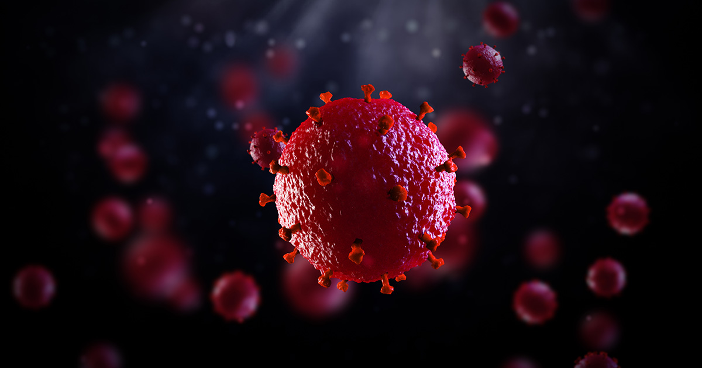

HIV
HIV é a sigla em inglês do vírus da imunodeficiência humana (human immunodeficiency virus), que é o causador da aids. O HIV é uma infecção sexualmente transmissível (DST), que também pode ser contraída pelo contato com o sangue infectado e de forma vertical, ou seja, a mulher que é portadora do vírus HIV o transmite para o filho durante a gravidez.
Não há cura para a infecção pelo vírus HIV, mas há remédios que podem reduzir drasticamente a progressão da doença. Essas drogas reduziram o número de mortes em decorrência da infecção em grande parte do planeta, mas não é um tratamento simples e a pessoa infectada demandará diversos cuidados em todas as áreas de sua saúde.
No Brasil, de acordo com o Programa Conjunto das Nações Unidas sobre HIV/Aids (UNAIDS), a incidência do HIV em pessoas de 15 a 49 anos é de 0,6%, segundo última atualização em 2013. De acordo com o mesmo relatório, o Brasil apresenta uma incidência maior que os seus vizinhos Bolívia e Chile, ambos com 0,3%, Paraguai e Peru, com 0,4% e Colômbia, 0,5%, por exemplo. No Haiti a taxa é de 2%, mas os números são muito mais altos em países africanos como Zimbábue (15%), Moçambique (10,8%), Malavi (10,3%), Uganda (7,4%) e Angola (2,4%). No Canadá e na Itália a incidência de infecção pelo vírus é de 0,3%
Todas as pessoas estão sujeitas à infecção pelo HIV, não importa o gênero, idade ou comportamento sexual. É preciso apenas que tenham contato com uma das formas de transmissão do vírus.
Hiv x Aids
HIV não é a mesma coisa que aids. A aids é uma doença crônica e que pode ser potencialmente fatal. Ela acontece quando a pessoa infectada pelo HIV vai tendo o seu sistema imunológico danificado pelo vírus, interferindo na habilidade do organismo de lutar contra os invasores que causam a doença, além de deixar a pessoa suscetível a infecções oportunistas.
Fatores de risco
Todos estão sujeitos a contrair o vírus HIV, uma vez que a doença não escolhe cor de pele, idade, gênero ou preferências sexuais, contudo, há alguns comportamentos de risco para a infecção por HIV:
- Relação sexual (vaginal, anal ou oral) com pessoa infectada sem o uso de preservativos
- Compartilhamento de seringas e agulhas, principalmente, no uso de drogas injetáveis
- Reutilização de objetos perfurocortantes com presença de sangue ou fluidos contaminados pelo HIV
Mulheres HIV-positivas que queiram engravidar também precisam tomar as providências, sob orientação médica, para não transmitir o vírus para os seus filhos durante a gestação, parto ou amamentação.
Sintomas de Hiv
Quais os sintomas do HIV no corpo?
A maior parte das pessoas infectadas pelo vírus HIV desenvolvem, cerca de um ou dois meses após a exposição, alguns sintomas parecidos com os de um resfriado. Esta fase, conhecida como primária ou aguda pode durar por algumas semanas e é bastante perigosa, pois a infecção pode passar desapercebida e a carga viral (quantidade de vírus no sangue) neste momento é bastante alta, fazendo com que o vírus se espalhe mais facilmente. Depois deste período os sintomas podem desaparecer espontaneamente por vários anos antes do HIV ser diagnosticado.
Entre os sintomas que podem surgir quando a pessoa foi infectada pelo HIV estão:
- Febre;
- Mal-estar;
- Manchas vermelhas pelo corpo;
- Aumento dos linfonodos, ou ínguas;
- Dores de cabeça;
- Dor nos músculos;
- Erupção cutânea;
- Calafrio;
- Dor de garganta;
- Úlceras orais ou úlceras genitais;
- Dor nas articulações;
- Sudorese noturna;
- Diarreia;
- Tosse.
Tratamento de HIV
Atualmente há tendência de tratar todos os pacientes com HIV, independente do CD4, com o objetivo de reduzir a transmissão e melhorar a evolução clínica das pessoas portadoras do HIV.
Há várias medicações disponíveis e o tratamento é sempre combinado com pelo menos três drogas. Há um consenso brasileiro de tratamento de HIV/Aids do Ministério da Saúde, que visa uniformizar as formas de tratar. A medicação de primeira escolha hoje está disponível em um único comprimido, é a combinação de lamivudina, tenofovir e efavirenz. No caso de contraindicação, efeitos adversos ou resistência, temos opções de outros antirretrovirais que deverão ser individualizados para cada paciente. A indicação de qual esquema de tratamento deve ser utilizado é passada pelo médico.
O importante é que uma vez iniciado o tratamento, o paciente deve estar ciente de que ele não deve ser interrompido sem motivo e que as medicações devem ser tomadas todos os dias e nos intervalos prescritos. Quando utilizado de maneira irregular, o tratamento pode falhar por surgimento de vírus resistentes.
Prevenção
Para se prevenir contra o HIV, o mais importante é não se colocar em situação de risco para a infecção pelo vírus, ou seja:
- Faça sexo (vaginal, anal ou oral) sempre com proteção
- Não compartilhe agulhas e seringas
- Não reutilize objetos perfurocortantes no geral
- No caso de violência sexual, comunique as autoridades o quanto antes e vá a um hospital, de preferência especializado, para que eles possam ministrar os remédios de profilaxia de infecção pelo HIV ou outras doenças sexualmente transmissíveis (DST). As chances de não se desenvolver essas doenças quando a profilaxia é feita poucas horas após o ato é muito maior
- Se você descobriu que tem o vírus, comunique o seu parceiro ou pessoas com as quais teve relações sexuais. Ele precisará fazer os testes, pois um diagnóstico precoce faz com que o tratamento seja muito mais efetivo. Além disso, eles precisam saber se estão com o vírus para que não acabem por infectar outras pessoas.
- Se você já foi diagnosticado com HIV, para se prevenir a aids o mais importante é que você tome todos os seus medicamentos conforme prescrição e siga todas as demais orientações médicas, além de procurar ter uma vida mais saudável, se alimentando bem, mantendo o peso compatível com a sua idade, sexo e altura e, se ainda fuma, deixar de fumar. No caso de infecções oportunistas ou outros sintomas enquanto está se tratando do HIV, é importante procurar assistência médica para tomar as providências corretas contra a doença o quanto antes, que incluem medicações que não interfiram com os seus antirretrovirais.